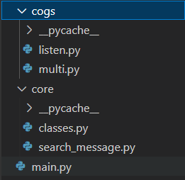
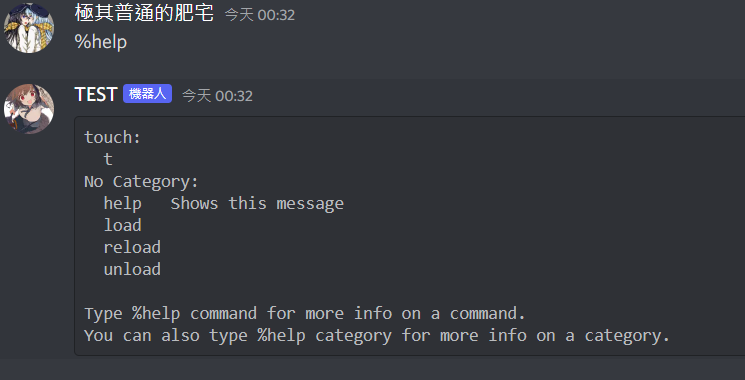
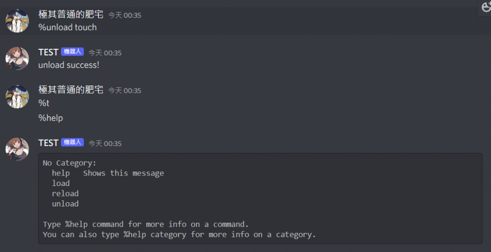
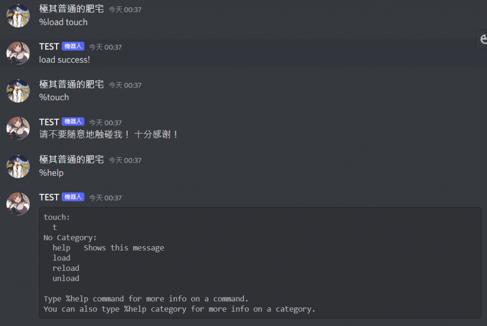
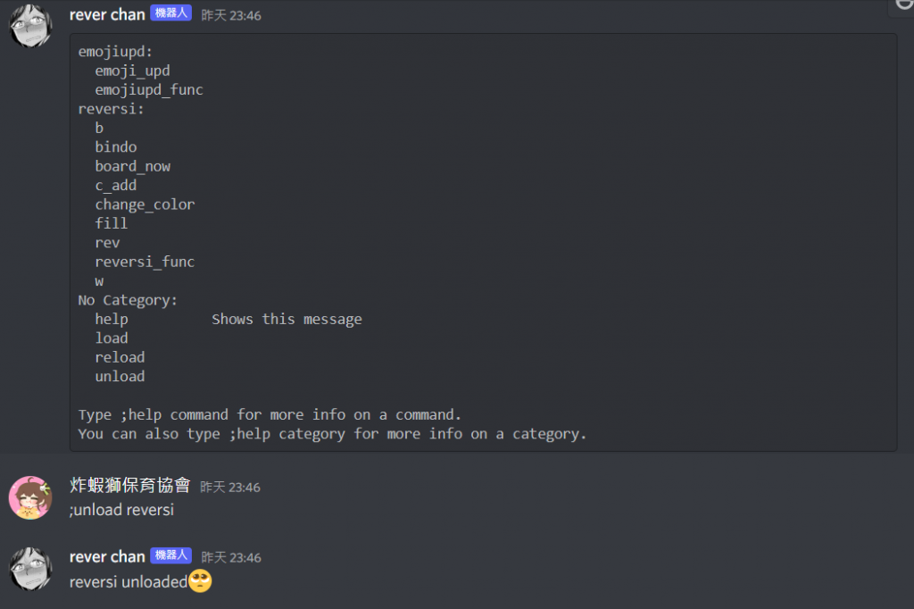

如果你的機器人功能多到一個程度，把全部的程式碼全部塞在一個文件裡顯然不是好辦法。不但看起來雜亂，也難以維護，就算只是其中一個功能出問題也必須要把整個bot關掉。這時候就可以使用Cogs 的架構來寫，可以將commands和listener等東西分堆塞在各自文件裡並方便我們裝卸。
照官方文件 的說法，比較重要的有這幾點:
每個cogs都是commands.Cog的子類別
每個command要前加@commands.command()
每個listener要前加@commands.Cog.listener()
Cogs可以用Bot.add_cog()來註冊
Cogs可以用Bot.remove_cog()來卸載
通常會跟Extension 功能配合
當然單純這樣條列出來是看不懂的，底下來看實例。其檔案架構通常會長下面這樣

cogs資料夾是拿來放各個cogs的
1 2 3 4 5 6 7 8 9 10 11 12 13 14 15 16 17 18 19 20 21 22 23 24 25 26 27 28 29 30 31 32 33 34 35 36 37 38 39 40 41 42 43 44 45 46 47 from discord.ext import commandsimport osbot = commands.Bot('prefix' ) for filename in os.listdir('./cogs' ): if filename.endswith('.py' ): bot.load_extension(f'cogs.{filename[:-3 ]} ' ) @bot.event async def on_ready (): print ('Test begin...' ) @bot.command() async def load (ctx, cog_name ): try : bot.load_extension(f'cogs.{cog_name} ' ) except : await ctx.send('Failed.' ) return await ctx.send('load success!' ) @bot.command() async def unload (ctx, cog_name ): try : bot.unload_extension(f'cogs.{cog_name} ' ) except : await ctx.send('Failed.' ) return await ctx.send('unload success!' ) @bot.command() async def reload (ctx, cog_name ): try : bot.reload_extension(f'cogs.{cog_name} ' ) except : await ctx.send('Failed.' ) return await ctx.send('reload success!' ) if __name__ == "__main__" : bot.run('TOKEN' )
接著在core底下加一個文檔，這裡我叫他init.py
1 2 3 4 5 6 import discordfrom discord.ext import commandsclass Cog_Extension (commands.Cog): def __init__ (self, bot ): self.bot = bot
接著來把一個指令用成cogs。就拿上篇那個请不要随意地触碰我！ 十分感谢！ 來舉例他原本的程式區塊大概長這樣:
1 2 3 @bot.command(aliases=['touch' ] ) async def t (message ): await message.channel.send('请不要随意地触碰我！ 十分感谢！' )
把他用成cogs的話會需要把它塞進Class並加上我們剛剛寫的東西，所以會長得像這樣
1 2 3 4 5 6 7 from discord.ext import commandsfrom core.init import Cog_Extensionclass touch (Cog_Extension ): @commands.command(aliases=['touch' ] ) async def t (self, message ): await message.channel.send('请不要随意地触碰我！ 十分感谢！' )
記得要import需要的套件
接著在下面加上setup的函數
1 2 3 4 5 6 7 8 9 10 11 from discord.ext import commandsfrom core.init import Cog_Extensionclass touch (Cog_Extension ): @commands.command(aliases=['touch' ] ) async def t (self, message ): await message.channel.send('请不要随意地触碰我！ 十分感谢！' ) def setup (bot ): bot.add_cog(touch(bot))
這樣運行後給機器人預設的help指令後就能看到結構了。

像這邊unload掉touch後可以發現輸t他也沒反應了，輸help也看不見了。

而load回來的話可以發現指令有反應了，help中也看的到了。

前述的的程式結構較簡單可能沒什麼感覺，但要是程式複雜到如下圖能夠先unload一塊調整完後再load回去還是挺方便的。
